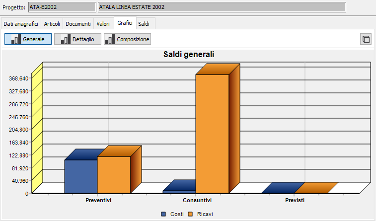
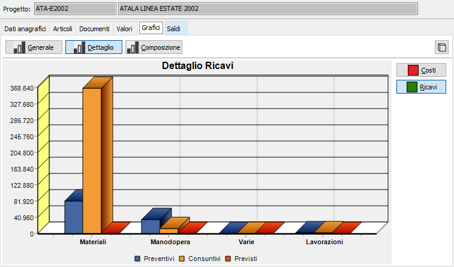
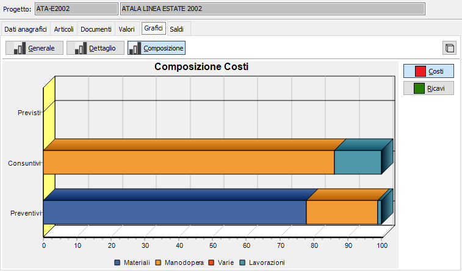

Grafici
In questa sezione sono visualizzati i grafici relativi ai valori progressivi del progetto. In questa sezione, sono attivi i bottoni Stampa ed Anteprima sulla toolbar per effettuare la stampa dei grafici visualizzati.
Il pulsante consente di alternare la visualizzazione del grafico in tre o due dimensioni.
Sono visualizzabili tre tipologie di grafico: il grafico Generale riporta la comparazione dei valori del progetto per tipo di valore (preventivo, consuntivo, previsto) raffrontando il totale dei costi e dei ricavi.

Il grafico Dettaglio riporta la comparazione dei valori del progetto per classe di valore (Materiali, Manodopera, ecc. o come configurato) raffrontandole per tipologia di valore (preventivo, consuntivo, previsto). Tramite i pulsanti Costi e Ricavi si passa dall'analisi del dettaglio dei costi a quella del dettaglio dei ricavi.

Il grafico Composizione riporta la comparazione dei valori del progetto per tipo di valore (preventivo, consuntivo, previsto) raffrontando le classi di valore (Materiali, Manodopera, ecc. o come configurato) espresse in percentuale sul totale della tipologia. Tramite i pulsanti Costi e Ricavi si passa dall'analisi della composizione dei costi a quella dei ricavi.
